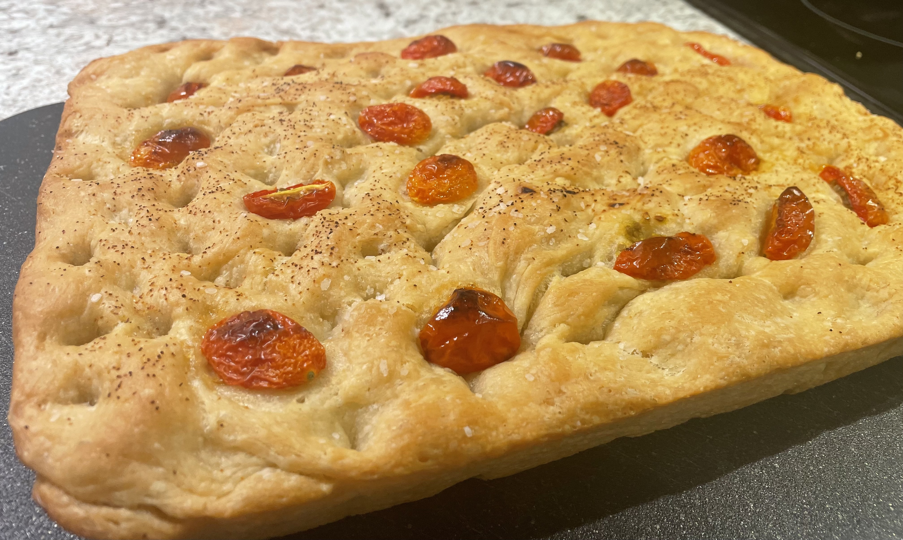

Foccacia Recipe

Focaccia is loved by all bread people far and wide!
With so many way to enjoy it, focaccia ends up being a great addition to always have in the kitchen.
Ingredients
10-12 Servings
- 1/4oz envelope active dry yeast (approx. 2 1/4 tsp)
- 2 tsp. honey
- 1 Tbsp. Morton kosher salt
- 5 Cups all-purpose flour (I use Gold Medal brand)
- 6 Tbsp. extra-virgin olive oil (EVOO) / divided plus more for hands later on
- 4 Tbsp. unsalted butter
- Flaky sea salt
- 3-5 Garlic cloves
Directions
- Whisk together your yeast, 2 tsp. honey
and 2 1/2 cups warm water in a medium bowl and let sit 5 minutes (it should start to foam).
- Add 5 cups of all-purpose flour,
1 Tbsp. Morton kosher salt and mix with a spatula until a shaggy dough forms and no dry streaks.
- Pour your 4 Tbsp. EVOO into a bowl that will fit in refrigerator, transfer to dough
into your bowl and turn to coat fully with the EVOO
- Wrap with plastic wrap or lid and chill dough until it has at least doubled in size, if you're in a rush you can leave at
room temperature and it should rise in 3-4 hours.
- Now decide how thick you want your focaccia, for sandwiches I would suggest an 18x13 pan if not a 13x9 will do fine. Coat
entire pan generously with butter
, pour an additional 1 Tbsp. EVOO into center of pan.
- Use two forks to scoop at sides of dough and flip to deflate, do twice and turn bowl 1/4 of the way every 2 flips
- Put dough into your buttered pan and let sit in dry warm spot until dough has again doubled in size
(on top of pre heating oven works great)
- Pre Heat oven to 450 degrees
- To make sure dough is ready for the oven poke with fingers, it should slowly rise, leaving a small indentation.
- Lightly oil your hands (necessary, if not, dough will stick to fingers)
- Dimple focaccia all over making impressions across entire loaf, do not be gentle with this step!
- At this point you may add any toppings you would like! Sun dried tomatos go great!
- Put pan on middle rack for 20-30 minutes until top of focaccia is a golden brown.
- Melt your additional butter in pan and add your garlic
- Brush your melted garlic-butter to top of focaccia
- Let cool on wire rack and cut into squares and serve!
You can store focaccia in freezable bags. When ready to eat again just pre heat oven to 300 degrees and reheat for 10-15 minutes.